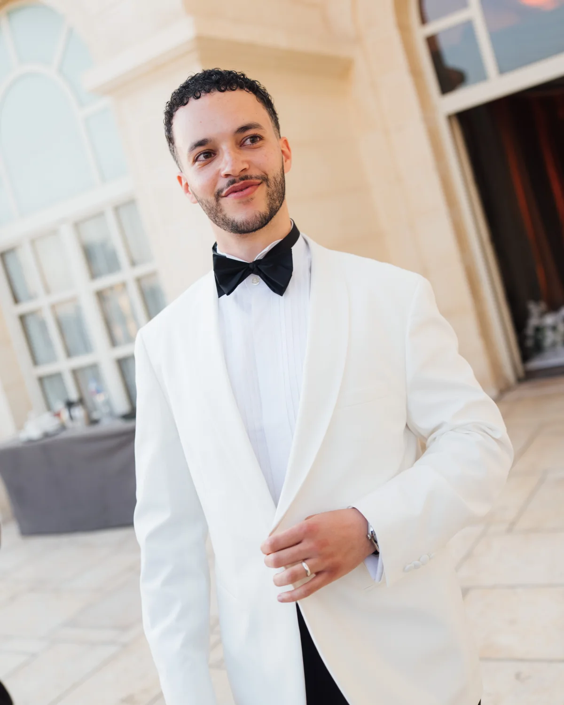
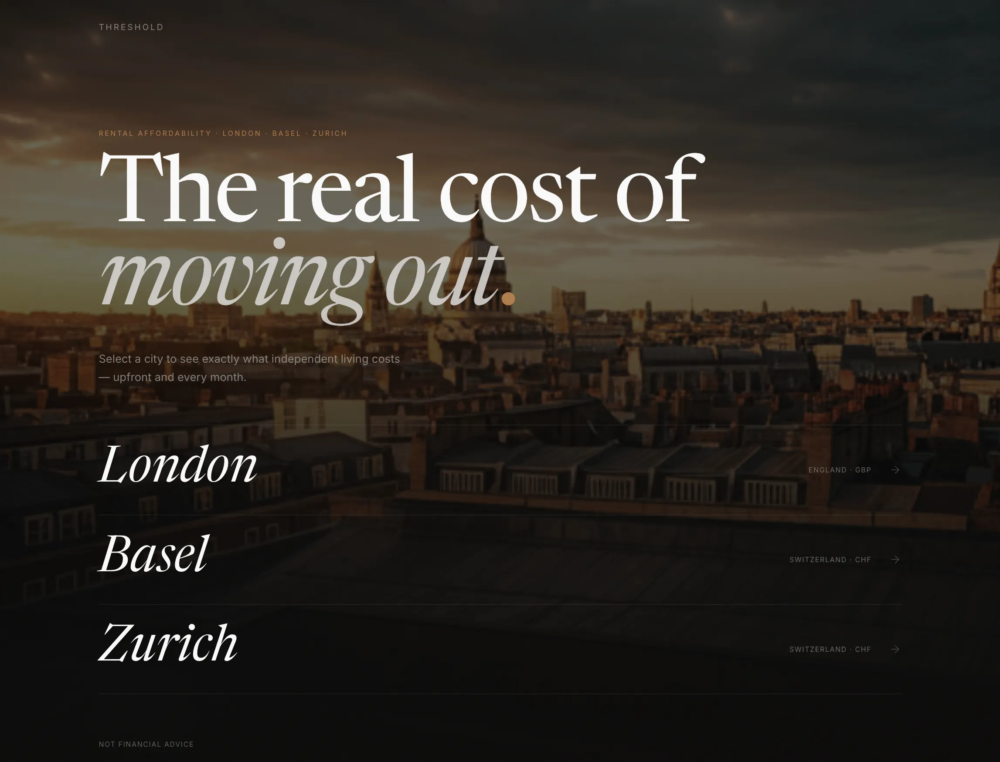
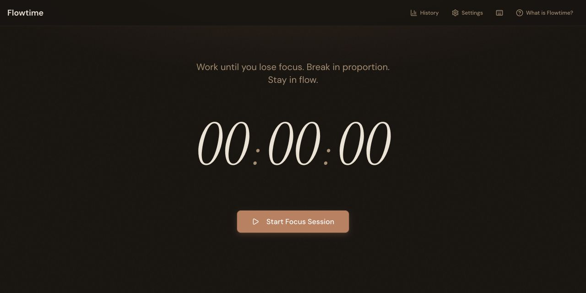
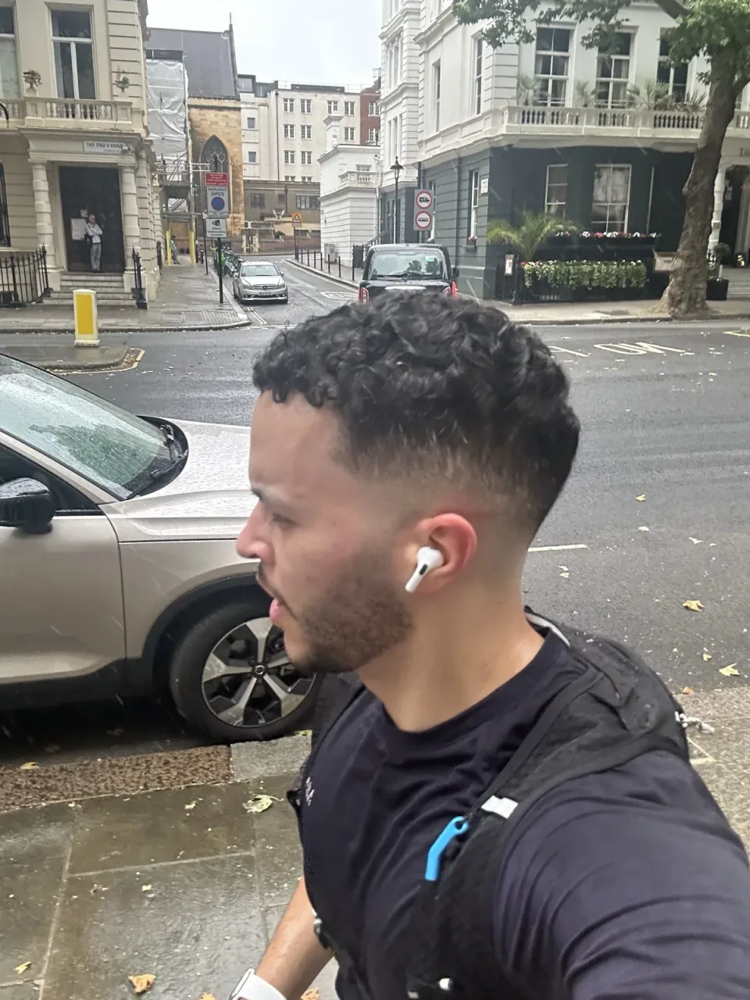

I build everyday software, and make complicated things feel simple.
I take ideas all the way through: deciding what’s worth making, designing it, building it across the stack, and measuring whether it actually works.
Work
06 things I’ve built · 03 I’m proudest of01
Threshold
A clearer view of what moving could cost.
Product · Data visualisation · 2026

02
Argus Risk
Every number shows where it came from and how old it is.
Event-driven systems · 2026

03
Flowtime
Breaks that match how long you actually focused.
Offline-first interaction · 2026


The Weekly Curiosity
1783
The first living creatures to ride in a balloon were a sheep, a duck and a rooster. All three survived the flight at Versailles.
Now making
Rebuilding Professor Past from scratch.
v1 is on GitHub if you want to meet the professor.